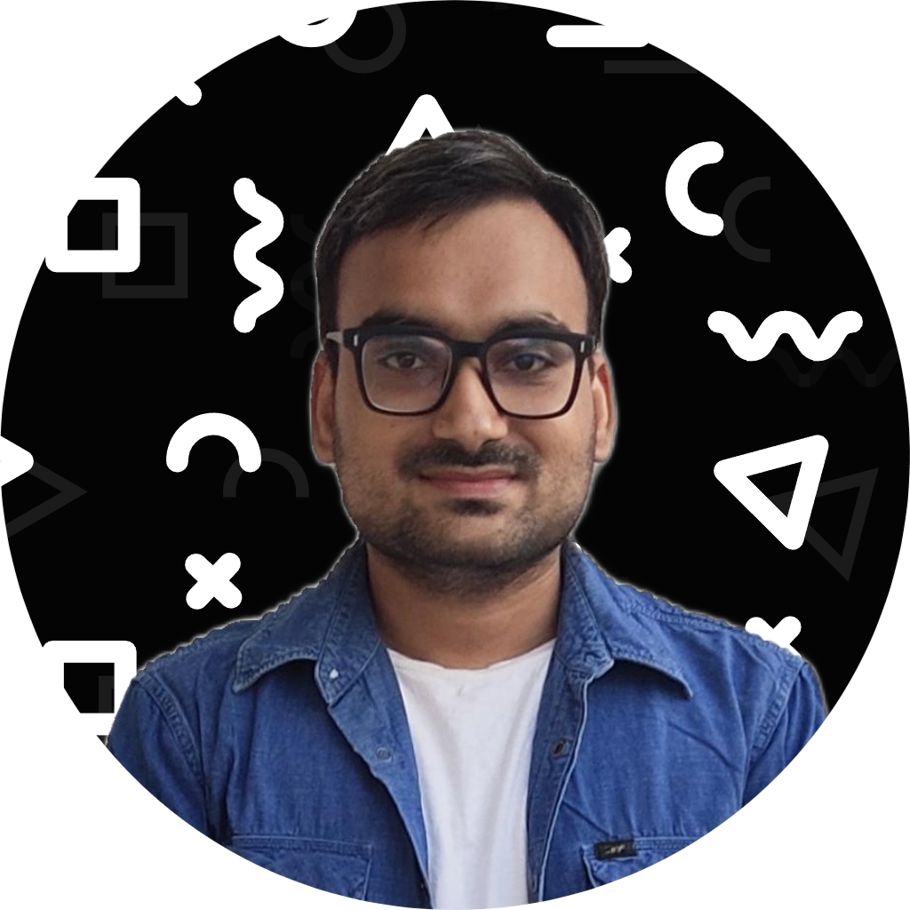

Summary
Enthusiastic storyteller with a talent for crafting engaging narratives that drive community engagement and promote initiatives. As Operations Manager at Mindshift Education, developed informative and promotional content for company events. Led storytelling initiatives in Saranda House, including guest interviews, social and media campaigns, to foster connections and promote activities. Skilled in scripting, interviewing, and content creation, with a proven ability to deliver impactful stories that resonate with diverse audiences.
Education
IIT Madras - BS Online Degree in Data Science and Programming
2023 onwards (Ongoing) Currently in Diploma Level
Work Experience
Vice Secretary
Gen AI Club | 2024 Oct - present
- Coordinated initiatives that expanded the club's impact, managing event planning and collaboration efforts to elevate student engagement.
- Crafted compelling storytelling content strategy
Operations Manager
Mindshift Education | Dec 2023 - Oct 2024
- Managed calendars, scheduled appointments, and crafted educational content for students.
- Coordinated multiple events, including video recording and post-production tasks.
- Collaborated with teams to create impactful videos for educational campaigns.
Content Head
Saranda House | Apr 2023 - Sep 2024
- Headed team for video content for house events and communication campaigns.
- Led story-driven initiatives to highlight achievements, fostering stronger community engagement.
- Produced video interviews and promotional materials to increase participation in house activities.
Content Coordinator
Pardox Team | Nov 2023 - Sept 2024
- Conducted research and developed story frameworks to align with the team's creative vision.
- Contributed to brainstorming sessions, generating unique ideas to elevate storytelling approaches.
- Produced high-quality scripts, articles, and other content that enhanced audience engagement.
Skills
- Video Editing with DaVinci Resolve.
- Content Creation experience in scripting, storyboarding, and producing engaging narratives.
- Experienced in conducting and editing interviews with a focus on eliciting compelling responses.
- Leadership ability to coordinate and motivate teams to achieve production goals.
- Software Knowledge of Canva, Figma (Design for visuals), OBS Studio, Audacity.
Certifications
- Advanced 3-week Figma Workshop
- Paradox 24 Multimedia Coordinator.
- Web Design Certification (Udemy).
- Canva Mastery Certification (Udemy).
Hobbies
- Watching Insightful Podcasts
- Reading interactive fiction stories
- Writing Web Novels
